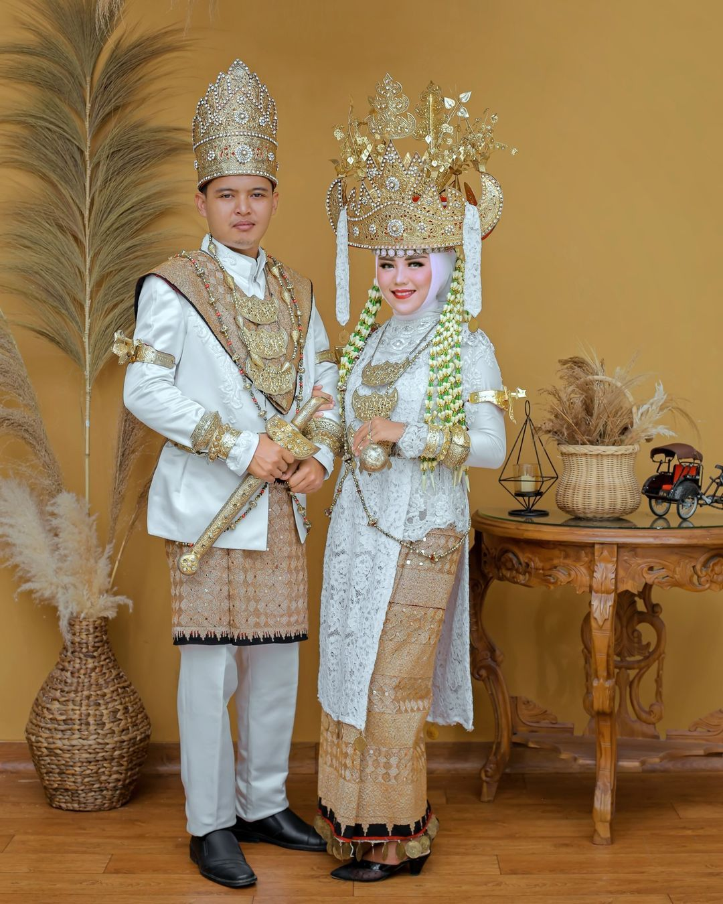

pakaian adat pepadun
Baju adat Pepadun adalah salah satu pakaian tradisional dari masyarakat Lampung, khususnya suku Pepadun yang tinggal di daerah dataran tinggi LampungPakaian ini memiliki ciri khas warna putih yang melambangkan kebersihan dan kesopanan Untuk pengantin wanita, baju adat Pepadun terdiri dari kebaya maju yang terbuat dari kain beludru dengan motif bunga, serta aksesoris seperti kakalah bangkang, buah jukun, papan jajar, dan bulan tananggal.Mahkota kepala wanita disebut siger berigi dengan hiasan bunga daun bambu atau melur
Makna Filosofis
Baju adat Pepadun tidak hanya berfungsi sebagai pakaian tetapi juga sebagai simbol status sosial dan kebanggaan etnis. Warna-warna cerah dan aksesoris mewah melambangkan keindahan, kekuatan, dan kemakmuran. Setiap elemen dari pakaian ini memiliki makna tersendiri, mencerminkan nilai-nilai budaya dan tradisi yang diwariskan dari generasi ke generasi."
Saat ini, meskipun banyak pernikahan dan acara yang mengadopsi gaya modern, baju adat Pepadun tetap dijaga kelestariannya. Banyak desainer lokal yang mencoba menggabungkan unsur-unsur tradisional dengan desain modern untuk menjaga relevansi dan apresiasi terhadap warisan budaya ini. Baju adat Pepadun adalah bukti nyata betapa kaya dan beragamnya budaya Indonesia. Melalui pakaian ini, kita bisa melihat kilasan sejarah dan tradisi masyarakat Lampung yang tetap hidup dan dihormati hingga saat ini. Melestarikan pakaian adat ini adalah bagian penting dari menjaga identitas budaya dan warisan nenek moyang kita.
keterangan
pakaian adat pepadun
tanggal terbit
2-11-2024